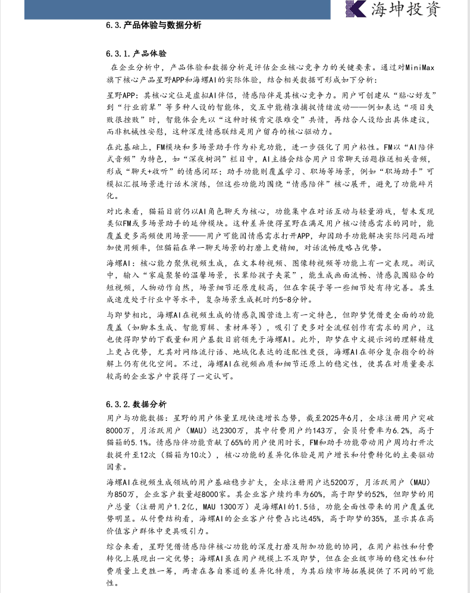
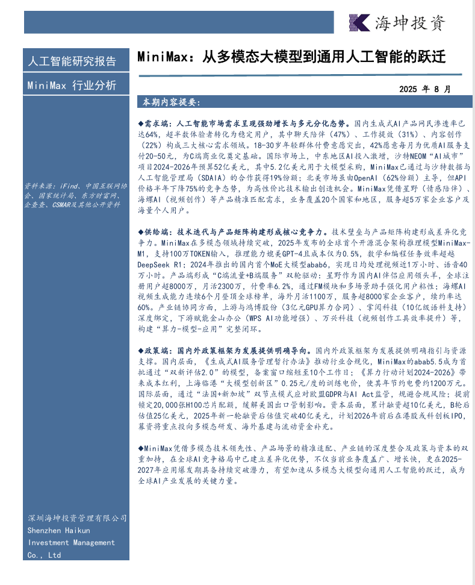

项目背景
在海坤投资担任投资助理（人工智能组）期间，围绕 AI 大模型赛道开展系统研究，支持投资判断与行业认知积累。
核心工作
- 调研 MiniMax、智谱等头部大模型厂商的商业化路径与产品矩阵。
- 梳理行业竞争格局与产业链上下游。
- 独立撰写深度行业研究报告。
- 建立行业信息筛选机制，跟踪政策、融资、竞品和市场动态。
项目成果
2000+
公众号阅读量
深度研报
独立撰写并发布
研究价值
从「产品矩阵」到「竞争格局」再到「产业链」，形成对 AI 大模型赛道的结构化认知框架。
研究成果展示
竞品分析报告与行业信息监控机制的核心页面。


项目复盘与经验总结
- 行业研究要建立信息筛选机制，避免被海量信息淹没。
- 商业化路径分析要区分「收入模式」与「增长逻辑」。
- 研究结论需落到投资判断或决策建议，而非停留在信息整理。